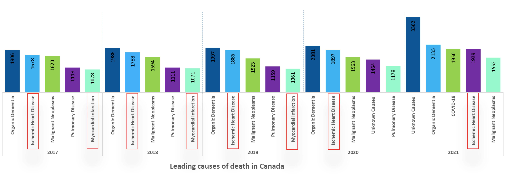
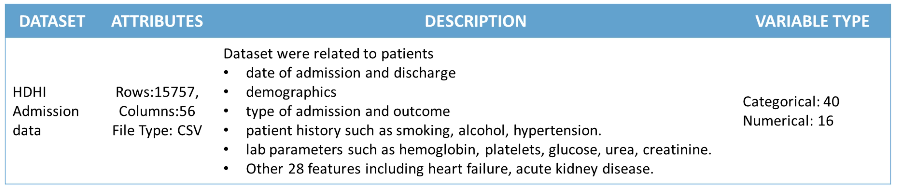
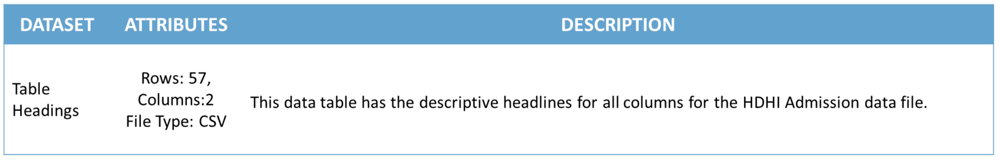
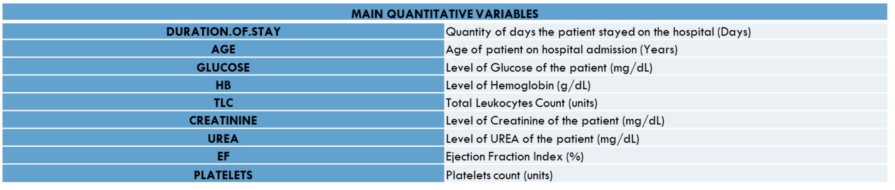
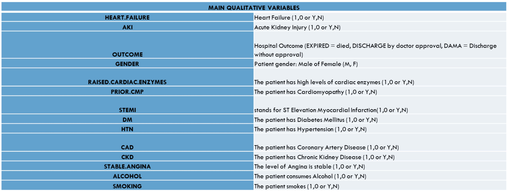

.png)
The human body comprises a diverse array of cells that collectively form tissues and organ systems. At the heart of this intricate network is the cardiovascular system, which is responsible for pumping blood throughout the body and sustaining life. My analysis focuses on patients admitted to the hospital with cardiovascular diseases, a leading cause of mortality globally.
An analysis of the top five leading causes of death in Canada from 2017 to 2021 reveals that heart-related diseases consistently rank among the most significant contributors, occupying the second and fourth positions for the majority of the years.
We tried to identify the following from our analysis
We have selected two datasets from Kaggle and described them in the next section.
We have utilized the “Hospital Admissions Data” dataset (File size: 2.6 MB, Rows: 15757 K, Columns: 56) available in the Kaggle portal (https://www.kaggle.com/datasets/ashishsahani/hospital-admissions-data/discussion/302894?resource=download&select=HDHI+Admission+data.csv)in CSV format.
The Kaggle portal provides this dataset free of charge and can be used for research/project purposes. Details of their conditions are available in https://doi.org/10.3390/diagnostics12020241. This dataset is being provided under creative commons License (Attribution-Non-Commercial-Share Alike 4.0 International (CC BY-NC-SA 4.0)) https://creativecommons.org/licenses/by-nc-sa/4.0/.
This data was collected from patients admitted over a period of two years (1 April 2017 to 31 March 2019) at Hero DMC Heart Institute, Unit of Dayanand Medical College and Hospital, Ludhiana, Punjab, India. During the study period, the cardiology unit had 14,845 admissions corresponding to 12,238 patients. 1921 patients who had multiple admissions.
 As discussed previously, the initial dataset included a variety of variables.
The key variables used in this project (as identified by certain models) are listed below.
The primary variables analyzed in this project were HEART.FAILURE, AKI(Acute Kidney Injury), OUTCOME, and DURATION.OF.STAY.
 
Heatmap with summary results (p-value) indicated test based on the difference applied 2x2
Table Contingency for pair of categorical variables
The test based on the difference suggests that Hypertension (HTN) is not a significant predictor of Heart Failure. The p-value associated with HTN exceeds the significance level of 0.05, and consequently we cannot consider HTN as an explanatory variable of HEART.FAILURE.
However, Raised Cardiac Enzymes appears to be a significant predictor of Heart Failure. Additionally, Prior Cardiac Medical Procedures (PRIOR.CMP) and Smoking can be considered as potential explanatory variables for Heart Failure, as they are independent of each other but related to the outcome variable.
Based on these findings, the heatmap analysis suggests several potential models for predicting Heart Failure with at least two explanatory variables:
Alcohol Consumption is not a significant predictor of Acute Kidney Injury (AKI). Therefore, it should not be included as an explanatory variable in the model.
For the other ones, with at least two explanatory variables, the possibilities based on the heatmap are:

Probability of response variables Heart Failure and AKI in function of their most significant explanatory variables
indicated by the Logistic Regression model considering all other variables with means/medians of train part
Through first logisic regression for Heart failure we found that Platelets and Smoking are not significant predictors of Heart Failure. Platelets was not significant at the 5% level, and Smoking showed a counterintuitive negative effect. Therefore, these variables are removed from the model. It was checked if there is some problem of multicollinearity among the explanatory variables by checking Variance Inflation Factor (VIF), but it is possible to see below that only UREA and CREATININE presented moderate collinearity (2 < VIF < 5), but not severe (VIF > 5) and for this reason it was decided to keep them.
The probability of heart failure rises with higher urea levels and lowers with increasing ejection fraction (EF), aligning with expected trends, as both deviate from American Heart Association recommended levels for healthy individuals. Since the final logistic model effectively captures heart failure probability, it was applied to the test set to assess prediction performance.
We followed the same procedure for Acute Kidney Injury, with CREATININE emerging as the most significant explanatory variable.